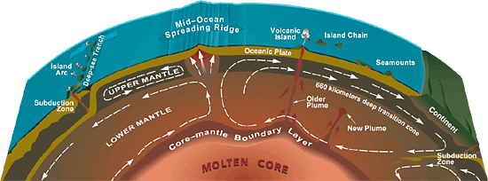

In these regions, earthquake waves seem to slow down, suggesting that the blobs are hotter than the surrounding mantle.
How do we know this?
Rock expands when heated.
That causes waves to travel sluggishly through warm regions, like the slower vibrations moving through a loose guitar string.

Said
Ed Garnero
, a seismologist at Arizona State University.
, a seismologist at Arizona State University.

The underlying "flow"of materials in the mantle drives geological phenomena at Earth's surface, ranging from earthquakes and volcanoes to the creation of mountains and oceans.